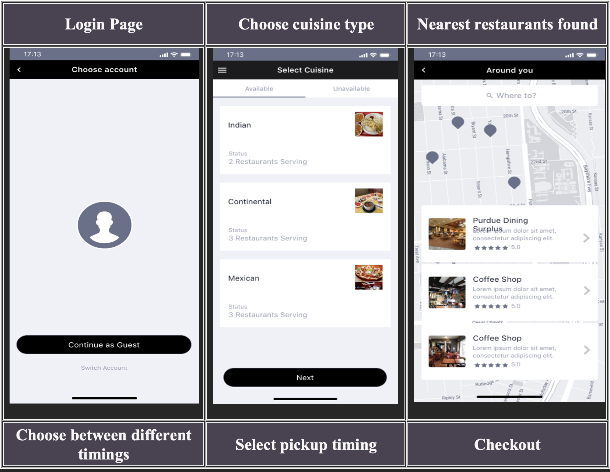
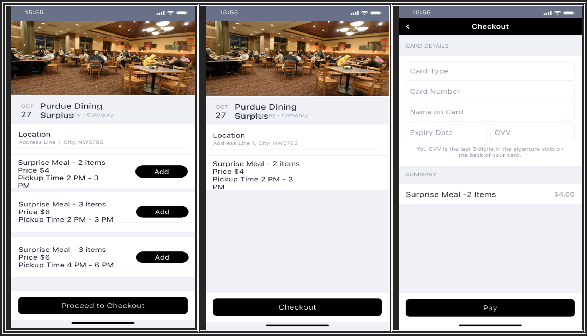
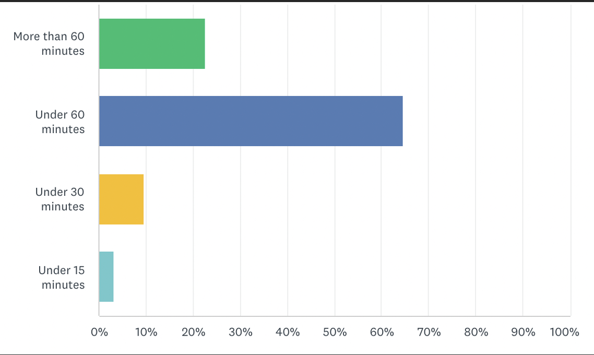
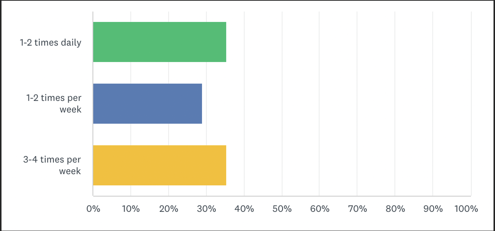
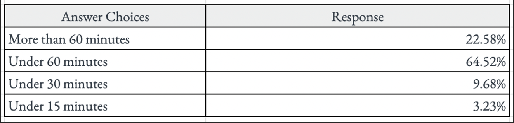
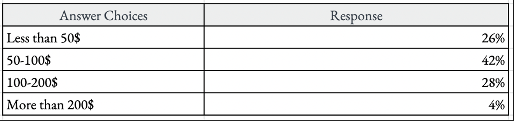
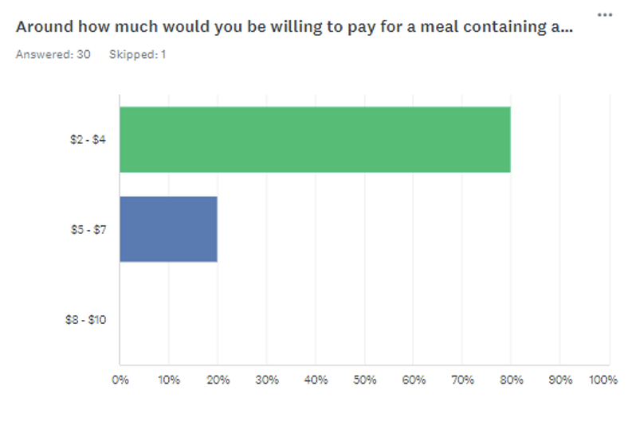
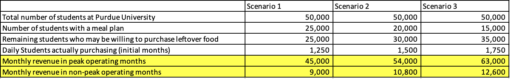
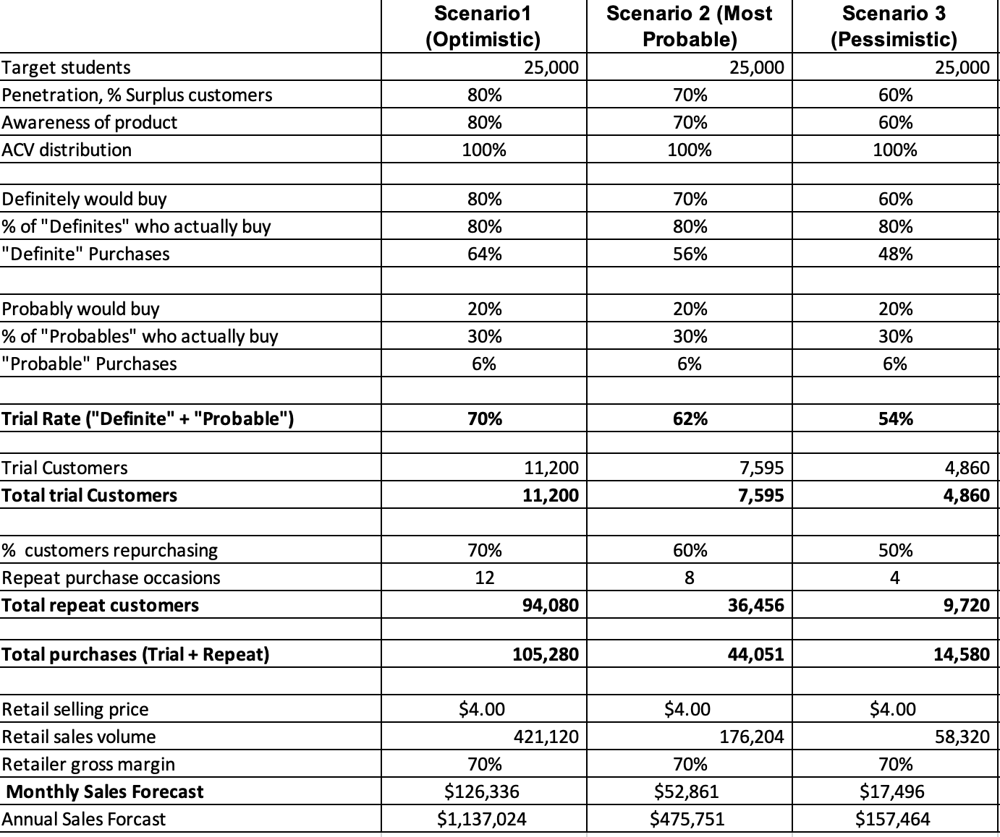

EXECUTIVE SUMMARY
Every year about 125-160 billion pounds of food is wasted in the US alone and most of this food ends up in the landfills buried under toxic trash eventually emitting harmful gases. Despite this food wastage, global hunger indices are rising which implies that better solutions must be introduced to bridge the gap between surplus food and demand. Our product idea aims to address this problem one step at a time. From our initial brainstorming sessions, we figured out that there was no better place to start than in the Purdue university campus itself, where, as students, we observed a of lot of food being wasted in dining halls and restaurants. Through our interviews with dining hall managers and employees, we understood that most on-campus dining halls discarded a significant quantity of food daily to avoid the additional cost and time burden of storing this surplus food. Through these interviews we also gained insights on the primary types of food that is usually wasted and how the food could be better handled so that it can be repurposed. Further, a survey was conducted with Purdue students, our primary customers, and the results indicated that there is a need and demand in the market for cheaper meal alternatives. Our proposal introduces a food pickup app - Surplus, which will connect customers to cheap, well-preserved food from dining halls and restaurants. Market research was done to gauge a broader understanding of the user's perception about the surplus food, willingness to buy, and the ideal price point that they would be willing to pay. Our goal is to primarily offer students access to an affordable variety of quality food while simultaneously reducing food wastage. This service will be enabled through a mobile application that allows users to order and pick up excess food from various dining halls and restaurants. The mobile application will be made available via Google Play Store and App Store. A prototype test was conducted with our potential primary customers where they were shown mock-ups of the application through which we received appreciations and suggestions to improve the end user-experience of the app.
Concept Testing
The team conducted an interview of a Purdue dining hall manager where interview questions were designed to understand Purdue policies on leftover food, how much food and what kind of food is mostly leftover. Important feedback that we received was to think about maintaining the temperature control for surplus food, that might require additional storage in a cooler, oven, or steamer. Students at Purdue University were given a survey to gauge their willingness to buy surplus food from Purdue Dining halls. The survey was sent out through various WhatsApp groups of Purdue Students and there was an offline (on-paper) survey done in our classroom as well. The first half of the survey consisted of questions that could help us understand their take-out behaviour in terms of food preferences, frequency of purchase, and the amount being spent currently. The second half was comprised of questions related to their frequency of visit to Purdue dining and what price would they be interested to pay for surplus food. The team also interviewed a dozen students who have worked/ are currently working in Dining or Restaurants on the Purdue campus. The questions consisted of their experiences related to serving and disposal of food at these places and which food item they thought was getting thrown away the most. We also gave them a verbal description of our idea and gathered their feedback. While most of them appreciated our idea, a few of them mentioned their concerns regarding the execution. These included the challenges with the legality of selling leftover food, and concerns about the pricing. The survey results and interviews helped us validate that majority of the students would be interested in buying the surplus food at a price range between $2 to $4 for at least a surprise meal of 2 items.
Prototype Testing
Through the survey results it was revealed that most of the students were not aware of the Mobile Order app which is an existing app to order food from restaurants on the campus. Additionally, this app provided limited functionality and features and was not found to be user-friendly. The team therefore decided to build a new mobile app for our product and snapshots of the mobile app prototype are illustrated below.
 A prototype test was conducted with Purdue students individually to get their feedback. They were shown mock-ups of the app and the interaction flow was explained to them verbally. Some feedback we received included suggestions to include vegetarian/non-vegetarian preference selection upfront. It was also suggested to add questions like ‘Are you allergic to anything?’ with dropdown options showing a list of common allergens like diary, peanuts, etc. Finally, a multi-line textbox to put in special instructions was also recommended. Although people liked the concept of receiving ‘Surprise Bags,’ they also suggested to include menus from dining, so that people can at least guess what they might get if they choose to purchase.
STP Analysis
Segmentation
Since the platform aims to serve university towns, we broadly categorise the population based on demographics into 3 groups, students, university professionals and locally residing people. We further segment the student population based on their geographical presence into students residing on campus and students residing off campus. Students residing on campus can be further categorised as students with regular meal plan and those who don’t. Through our platform we would want to serve customers by helping them save time and money while enjoying a variety of food in the form of surprise boxes. From our survey results, we found that people spending higher time to cook have higher frequency of take outs per month. These are some of the psychographic characteristics that we aim to serve through our platform.
 Targeting
Our primary target audience will be students who live off campus and who do not live with their families. We target this bracket of people as they rely on themselves to cook food. From the survey we conducted, 85% of people spend 60 mins on an average to cook a meal and 54% of students spend more than $100 on take outs. Students living on campus have access to dining halls and regular meal plans, hence we target them as our secondary customers (at times this population would want to eat from restaurants that we service). Post our initial release, we plan to target the population apart from students by understanding the user preferences and behaviour as they possess a good potential to add on to our revenue streams.
 Positioning
Our aim is to service customers, primarily students who are short on time and money at the same time reducing wastage of food. We believe that we can create an impact in our customers life’s by proving cost efficient, variety of meals and help them reduce overall time spent on cooking daily. We also believe in creating a social impact by spreading awareness of the value that can be created through surplus food.
Positioning from B2B Perspective
Dining halls and restaurants who work on preparing bulk quantities of food (buffets) end up throwing 10-20% or even more of certain days as their initial estimates can be off due to several factors. Discarding food at the end of each day comes with certain cost that is associated with waste management. Our platform would help restaurants to reduce costs and create an alternate source of income serving as additional avenues to the business. The restaurants can also look at this service from a unique perspective of creating new customers as sometimes students who buy surprises box at discounted rates may eventually like and end up being their regular customers.
Marketing Mix
Product
Surplus is a mobile application that allows users to order and pick up excess food from various dining halls and restaurants. Users can choose which dining hall or restaurant they want to order from and schedule the time to pick up the order. While the menu options are not highlighted, restaurants are categorized by cuisine such as Indian, Continental, and Mexican and the user gets a surprise meal with 2-3 items. The content in the app, such as price, participating restaurants, scheduling availability, cuisine selection, and price updates regularly based on the excess food remaining at each participating restaurant and dining hall. The application is also made to integrate with various APIs (Application Programming Interfaces) so that the user can perform general tasks such as seeing the location, paying for the order, etc.
Notification
Push notifications are a great way to keep users updated with information. These notifications can remind the user to order whenever a participating restaurant/dining hall starts accepting orders, remind the user to pick up the order for the scheduled time, provide feedback for the completed tasks, etc. This will also help the company increase its retention and engagement rates. These notifications are triggered at high motivation and high ability.
Cuisine Selection
Users can choose the type of cuisine they want. The cuisine selection includes Indian, Continental, and Mexican. Each cuisine selection has specific dining halls and restaurants catering the excess food. Users can order different cuisine foods if they choose to do so.
Location
Even though this application does not include a delivery option, users can utilize this feature to select the nearest dining hall or restaurant to place an order. Whenever the user chooses a specific restaurant, a distance measurement is given for user reference.
Meal Selection
There is no menu for each participating dining hall or restaurant. Users can select a surprise meal with 2-3 items or can choose a pre-specified quantity of food from a dining hall buffet. This surprise meal consists of items based on the excess food and the type of cuisine the user selected.
Payment
The price depends on the type of restaurant and surprise meal the user selected. Users can pay for the order using a debit/credit card. Once used, users can save the card and use it for future payments.
Pickup Status
Once the order is confirmed upon receiving the payment, the user can see the order status on the Pickup Status page. Users can see the type of order and corresponding pick-up time. Users can also view past orders in the history tab within the Pickup Status page.
Price
The price of the surprise meals is based on responses to the initial survey. Most of the users are comfortable with the $2-$4 price range. This price also depends upon three factors: cuisine, items in surprise meals, and demand for the specific type of excess food. In the initial month, the pricing for the surprise meals will be $4. After the initial month, the company can get the data about the participating restaurants and dining halls, where it is possible to estimate amount of food wastage, type of food wastage, and consumers demand for the surprise meals. The company will use this data to introduce a dynamic pricing, between $3-$5. A detailed analysis on pricing and company margin is done in the ‘cost structure and pricing’ section of the report.
Placement
The application will be available within Google Play Store and App Store, catering to both android and iOS users. The development for both Android and iOS applications is different will depend on factors such as development environment, system-specific design differences, and development complexity. The development will also absorb costs from external APIs that integrate with the app for user-specific tasks such as location selection and payment. In the longer run, the company is also expected to develop a website that can perform all the actions and is based upon market research about conversion rates through mobile applications and web application.
Promotion
The application will be primarily promoted through the company's participating restaurants and dining courts. Posters and ads on the menu about the app and the positioning statement are mentioned so that users can understand the USP (Unique Selling Proposition) of the product. This will help the company gain new customers from those visiting the participating restaurants. Initial market research will be performed to understand the different marketing channels the company can use to advertise. These channels can be through television ads, ads in various applications, and posters in specific places, etc. Since it is a new product in the market, initially, the customer acquisition cost (CAC) is expected to be high, but eventually, with word-of-mouth, it is expected to decrease.
Cost Structure and Pricing
Most of the costs incurred by the company will be a one-time initial set-up cost as opposed to recurring costs involving app development and design. The primary cost involves the payment for developing a cross-platform hybrid app with basic features like user login, personal profile setup, and push notifications. Since this a start-up, it is advisable to develop a cross-platform app across iOS and Android since it will be cheaper to develop and will have a wider audience as compared to a native app . However, some costlier advanced app features will also be necessary including food and restaurant/dining hall listings along with timings, secure payment gateways and geo-location. Additionally, advertisement costs will be incurred to make customers aware of this app. Some ad campaigns/posters can be launched around the university campus and in student apartments to promote the app. The projected overall costs for app development and advertisements range between $60,000 and $90,000. On a go forward basis, average monthly costs for app maintenance and upgrades can be expected to be around $1000. The main revenue structure is based on a flat fee levied by the app on each Surplus meal order placed and will be 30% of the order price. Hence, for an order of 3 items priced at $4, Surplus will earn $1.2. Currently, the app will price all meals at a standardized rate of $4/meal, but this is expected to move to a dynamic price range of $3-$6 in the future to accommodate different surprise box sizes comprising different number of items. An additional minimal yearly charge of $100 will be levied on the partner restaurants/dining halls for using this platform. In terms of demand, students without a Purdue meal plan are the target audience and different scenarios are created to obtain an approximate monthly revenue assessment.
If the app launch happens in a peak time (corresponding to the semester sessions), the initial average monthly revenues are expected to range between $45,000 and $63,000. The break-even point is considered where the revenues equal the fixed costs of set-up ($75,000 on average) and is equal to 1.67 months. However, if the app launches at a non-peak time (corresponding to summer semesters/winter breaks) when most students are not on campus, at least 3 months will be needed to break-even. Hence, it is recommended to launch Surplus during the semester sessions when most students are on campus. In terms of the supply side, Purdue dining hall meals were considered to derive an approximate assessment of supply that can be achieved. Conservative monthly app earnings from the dining halls alone are expected to be $35,000 per month. Partner restaurants on campuses and surrounding areas are also expected to contribute approximately this amount to have monthly revenues over $35,000 and it will thus take Surplus roughly over one month to break-even. A sales forecast was also computed to calculate average earnings over time and a most probable annual profit of $480,000 was estimated. However, this is a conservative estimate and is expected to be higher as more customers and more restaurants are onboarded on the app.
Assumptions in the sales forecast: (i) There is no market competition yet, hence ACV is assumed to be 100%. With competitor brands like Too Good to Go focussing on bigger metropolitan areas, the market is expected to be captured by this app. (ii) Repeat customers are expected to contribute more and are assumed to order from the market thrice a week, twice a week and once a week respectively in the three scenarios. (iii) Only students without a meal plan are included as the target market in the sales forecast. However, students with a meal plan may also opt to buy some meals from nearby restaurants and this is expected to increase sales further. (iv) The yearly fee charged to participating restaurants and dining halls is not included in this sales forecast but is expected to add at least $5,000 to the annual profits.